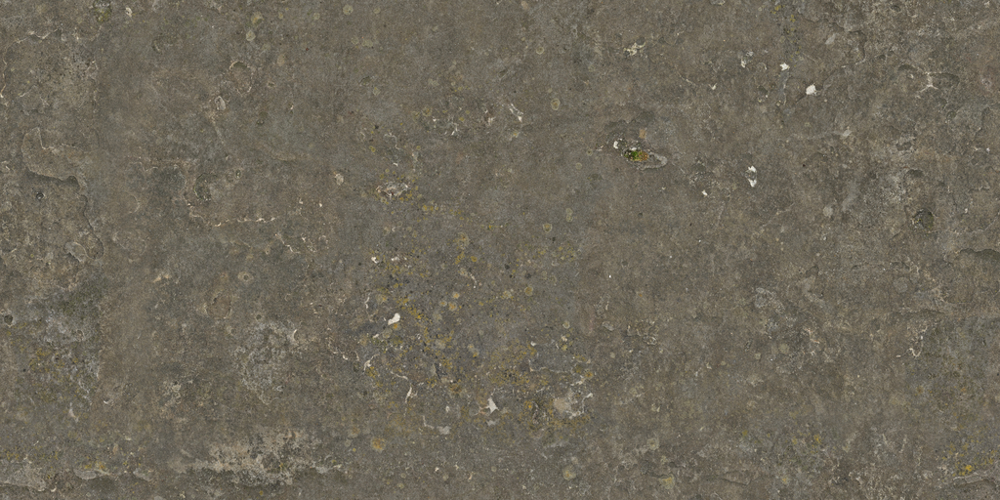
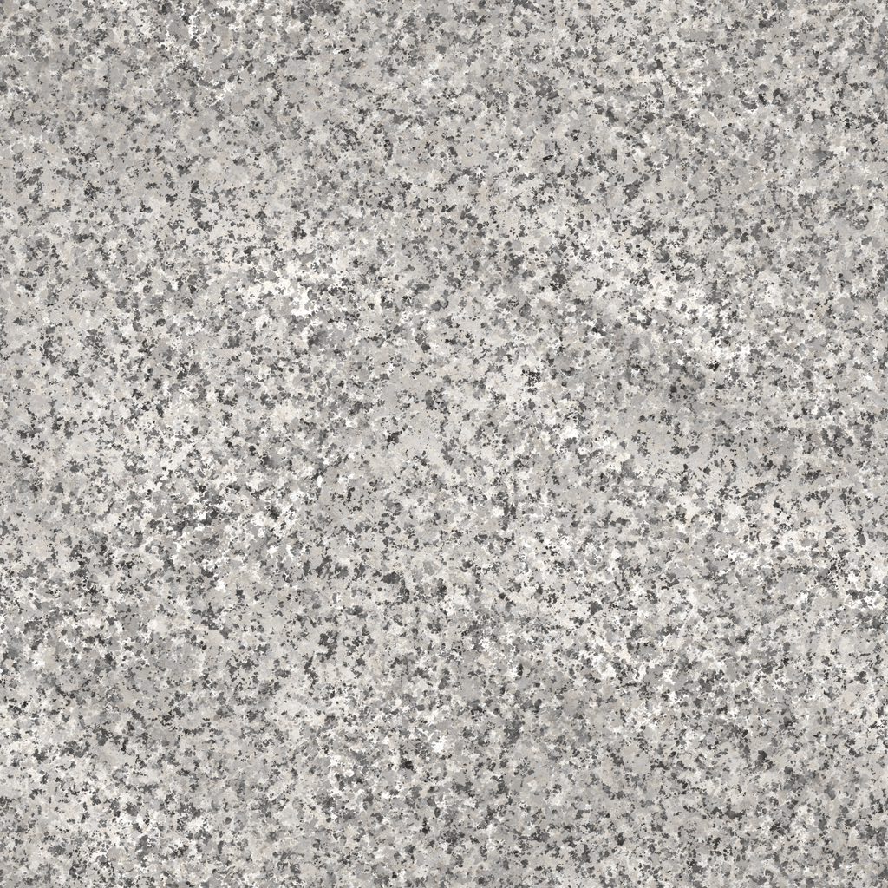

3D VOLCANO LAB
용암이 흐른 후에 빠르게 굳으며 현무암이 생성됩니다.
지표 가까이의 용암을 빠르게 식혀 보세요.
ROCK COMPARISON
식는 장소와 속도가 달라지면 광물 알갱이의 크기도 달라집니다.

광물이 자랄 시간이 짧아 알갱이가 매우 작고, 어두운 한 덩어리처럼 보입니다.

광물이 자랄 시간이 충분해 석영·장석·흑운모 알갱이를 눈으로 구별할 수 있습니다.
CHECK YOUR LEARNING